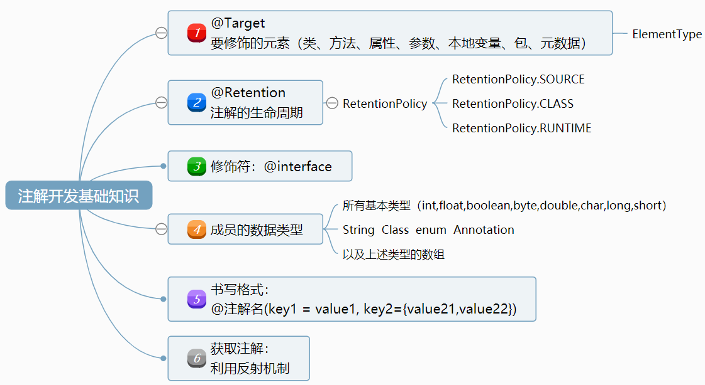

原文连接:https://www.cnblogs.com/buguge/p/11978530.html
【注解简介】
annotation（注解）是jdk从1.5开始提供的新特性。
就像用class定义类、用interface定义接口一样，java用@interface来定义注解。
注解用来修饰应用程序的元素（类、方法、属性、参数、本地变量、包、元数据）。annotation仅仅用来修饰元素，并不能影响代码的执行。
通过反射来获取元素上的注解，做相应的处理。
【注解开发基础知识】
脑图分享地址： http://naotu.baidu.com/file/686b0aab75d139e5fcd3876009fb2989?token=4ea604d27de02add

关于第②点的@Retention:
注解@Retention可以用来修饰注解，是注解的注解，称为元注解。
Retention注解有一个属性value，是RetentionPolicy类型的，Enum RetentionPolicy是一个枚举类型，
这个枚举决定了Retention注解应该如何去保持，也可理解为Rentention 搭配 RententionPolicy使用。RetentionPolicy有3个值：CLASS RUNTIME SOURCE
按生命周期来划分可分为3类：
- RetentionPolicy.SOURCE：注解只保留在源文件，当Java文件编译成class文件的时候，注解被遗弃；
- RetentionPolicy.CLASS：注解被保留到class文件，但jvm加载class文件时候被遗弃，这是默认的生命周期；
- RetentionPolicy.RUNTIME：注解不仅被保存到class文件中，jvm加载class文件之后，仍然存在；
这3个生命周期分别对应于：Java源文件(.java文件) ---> .class文件 ---> 内存中的字节码。
那怎么来选择合适的注解生命周期呢？
首先要明确生命周期长度 SOURCE < CLASS < RUNTIME ，所以前者能作用的地方后者一定也能作用。
一般如果需要在运行时去动态获取注解信息，那只能用 RUNTIME 注解，比如@Deprecated使用RUNTIME注解
如果要在编译时进行一些预处理操作，比如生成一些辅助代码（如 ButterKnife），就用 CLASS注解；
如果只是做一些检查性的操作，比如 @Override 和 @SuppressWarnings，使用SOURCE 注解。
关于第⑤点的书写格式：
当注解中定义了名为value的元素，并且在使用该注解时，如果该元素是唯一需要赋值的一个元素，那么此时无需使用key=value的语法，而只需在括号()内给出value元素所需的值即可。
关于第⑥点的利用反射获取注解：
- <A extends Annotation> getAnnotation(Class<A> annotationClass) 该元素如果存在指定类型的注解，则返回这些注解，否则返回 null。
- Annotation[] getAnnotations() 返回此元素上存在的所有注解，包括从父类继承的
- boolean isAnnotationPresent(Class<? extends Annotation> annotationClass) 如果指定类型的注解存在于此元素上，则返回 true，否则返回 false。
- Annotation[] getDeclaredAnnotations() 返回直接存在于此元素上的所有注解，注意，不包括父类的注解，调用者可以随意修改返回的数组；这不会对其他调用者返回的数组产生任何影响，没有则返回长度为0的数组
代码：
Method method = JDBCUtil1.class.getMethod("getConnection", null);
DBInfo info = method.getAnnotation(DBInfo.class);
System.out.println(info.url());
【注解示例】
SpringMVC开发中必用的注解@RequestMapping：


package org.springframework.web.bind.annotation;
import java.lang.annotation.Documented;
import java.lang.annotation.ElementType;
import java.lang.annotation.Retention;
import java.lang.annotation.RetentionPolicy;
import java.lang.annotation.Target;
import org.springframework.core.annotation.AliasFor;
@Target({ElementType.TYPE, ElementType.METHOD})
@Retention(RetentionPolicy.RUNTIME)
@Documented
@Mapping
public @interface RequestMapping {
String name() default "";
@AliasFor("path")
String[] value() default {};
@AliasFor("value")
String[] path() default {};
RequestMethod[] method() default {};
String[] params() default {};
String[] headers() default {};
String[] consumes() default {};
String[] produces() default {};
}
上文提到的@Retention注解：
package java.lang.annotation;
@Documented
@Retention(RetentionPolicy.RUNTIME)
@Target(ElementType.ANNOTATION_TYPE)
public @interface Retention {
/**
* Returns the retention policy.
* @return the retention policy
*/
RetentionPolicy value();
}可以看到，@Retention只有一个成员value，类型是枚举RetentionPolicy，并且没有默认值。